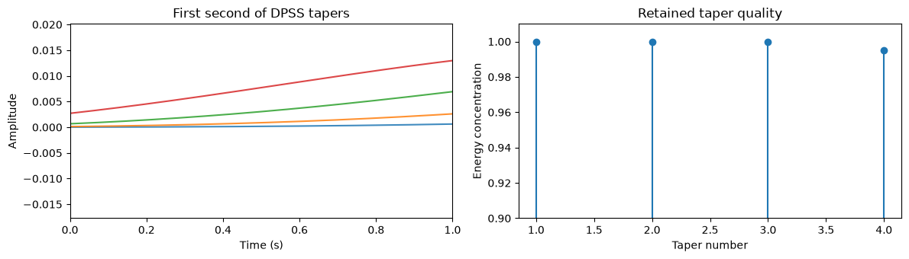
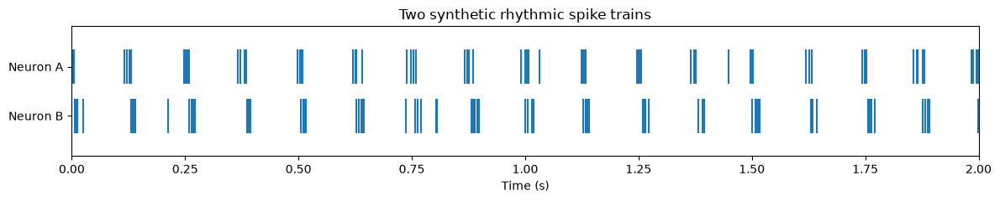
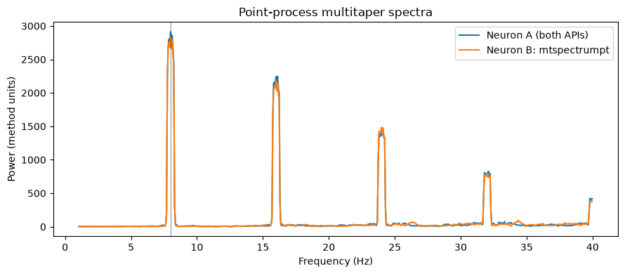
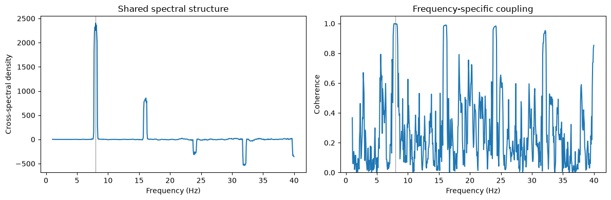
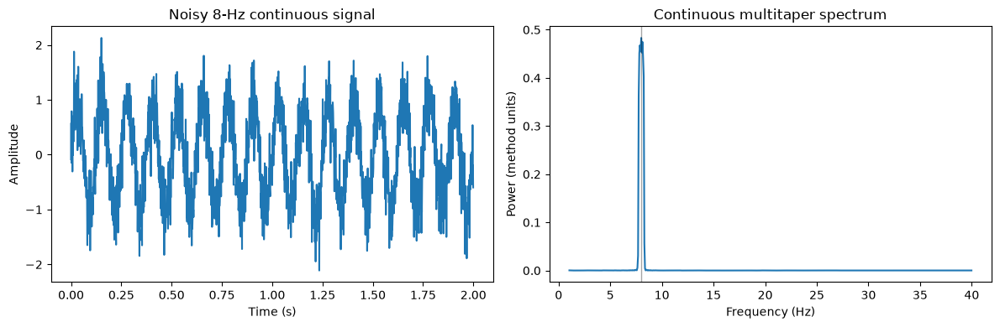
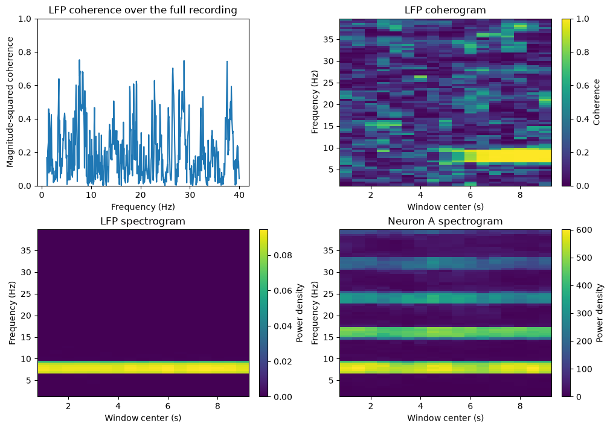
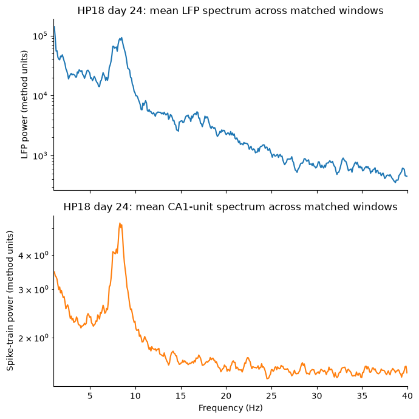
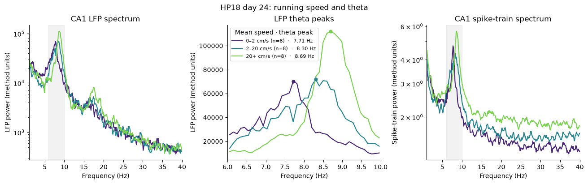
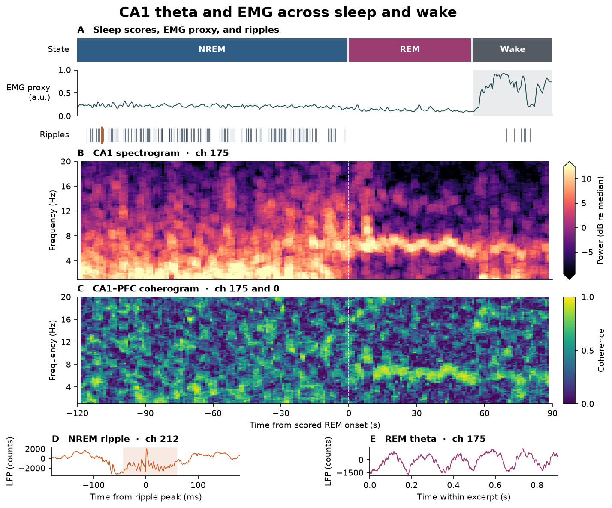

PyChronux multitaper spectral analysis¶
This tutorial is a practical tour of every function in neuro_py.process.pychronux. It uses deterministic synthetic data, so it can be run without a recording session. We will estimate oscillatory power in spike trains and continuous signals, then quantify frequency-specific coupling between two spike trains.
Why multitaper?¶
A periodogram made with one window can be noisy and can leak power from a strong rhythm into nearby frequencies. Multitaper methods instead multiply the same observation by several DPSS (Slepian) tapers, compute one Fourier transform per taper, and average the resulting estimates. The tapers are optimized to concentrate energy in a chosen bandwidth, reducing estimator variance while controlling leakage.
The central tuning choice is the time-bandwidth product NW. Larger NW supports more useful tapers (roughly 2 * NW - 1) and produces a more stable estimate, but smooths together more closely spaced frequencies. Longer data improve the intrinsic resolution; zero-padding only samples the same estimate on a finer frequency grid.
%matplotlib inline
from fractions import Fraction
from pathlib import Path
import matplotlib.pyplot as plt
import nelpy as nel
import numpy as np
import pandas as pd
from scipy.signal import resample_poly
from scipy.signal.windows import dpss
import neuro_py as npy
from neuro_py.process import pychronux as px
rng = np.random.default_rng(20260723)
fs = 1_000 # Hz; spike-time grid and continuous-signal sampling rate
duration = 10.0 # seconds
target_frequency = 8.0 # Hz
fpass = [1.0, 40.0]
NW, n_tapers = 3, 5
1. Foundations: frequency grids and DPSS tapers¶
Use getfgrid(Fs, nfft, fpass) when you need the frequency values and Boolean FFT mask used by the lower-level routines. Fs is in Hz, nfft is the FFT length, and fpass is the inclusive frequency range in Hz. The returned f has units of Hz; findx indexes an FFT with length nfft.
Use dpsschk((NW, K), N, Fs) for the Chronux-style taper layout needed by mtfftc and mtfftpt: (N samples, K tapers), scaled for Fs. Use get_tapers(N, bandwidth, fs=...) when you want to specify physical bandwidth in Hz and inspect concentration ratios. It returns (K tapers, N samples), so transpose it before passing it to the lower-level FFT routines.
n_samples = int(duration * fs)
nfft = 2 ** int(np.ceil(np.log2(n_samples)))
frequencies, findx = px.getfgrid(fs, nfft, fpass)
chronux_tapers = px.dpsschk((NW, n_tapers), n_samples, fs)
bandwidth_hz = NW * fs / n_samples
tapers_k_by_n, lambdas = px.get_tapers(n_samples, bandwidth_hz, fs=fs, n_tapers=4)
assert chronux_tapers.shape == (n_samples, n_tapers)
assert tapers_k_by_n.shape == (4, n_samples)
assert frequencies[0] >= fpass[0] and frequencies[-1] <= fpass[-1]
print(f"Frequency spacing: {fs / nfft:.3f} Hz")
print(f"get_tapers concentration ratios: {lambdas.round(4)}")
Frequency spacing: 0.061 Hz
get_tapers concentration ratios: [1. 1. 0.9997 0.9949]
time = np.arange(n_samples) / fs
fig, axes = plt.subplots(1, 2, figsize=(12, 3.5))
for taper in tapers_k_by_n:
axes[0].plot(time, taper, alpha=0.85)
axes[0].set(
xlim=(0, 1),
xlabel="Time (s)",
ylabel="Amplitude",
title="First second of DPSS tapers",
)
axes[1].stem(np.arange(1, len(lambdas) + 1), lambdas)
axes[1].set(
xlabel="Taper number",
ylabel="Energy concentration",
ylim=(0.9, 1.01),
title="Retained taper quality",
)
plt.tight_layout()

Choosing parameters. Choose fs to match the sampling grid used to represent the data. For point processes it defines the interpolation/grid resolution, not a spike-sampling rate. Choose NW according to the frequency separation you need to resolve; NW=3 is a useful starting point for a stable broad-band estimate. Do not request more tapers than the concentration criterion supports. Restrict fpass before interpretation, but ensure it is below the Nyquist frequency (fs / 2).
2. Point processes: rhythmic spiking, power, and coupling¶
We simulate two neurons that fire short bursts every 125 ms (8 Hz). Their individual spike times are in seconds. The independent jitter makes the example more realistic while retaining a known rhythm. time_support=[0, duration] is important: it defines the observation window, including intervals with no spikes, and therefore the rate baseline.
def make_burst_train(random_generator, phase_s=0.0):
"""Return an 8-Hz burst-modulated spike train in seconds."""
centers = np.arange(phase_s, duration, 1 / target_frequency)
bursts = [center + random_generator.normal(0, 0.006, size=5) for center in centers]
spikes = np.concatenate(bursts)
background = random_generator.uniform(0, duration, size=25)
return np.sort(
np.concatenate((spikes, background))[
(np.concatenate((spikes, background)) >= 0)
& (np.concatenate((spikes, background)) <= duration)
]
)
spikes_a = make_burst_train(rng)
spikes_b = make_burst_train(rng, phase_s=0.012)
spike_trains = [spikes_a, spikes_b]
fig, ax = plt.subplots(figsize=(12, 2.5))
ax.eventplot([spikes_a, spikes_b], lineoffsets=[1, 0], linelengths=0.7)
ax.set(
xlim=(0, 2),
yticks=[0, 1],
yticklabels=["Neuron B", "Neuron A"],
xlabel="Time (s)",
title="Two synthetic rhythmic spike trains",
)
plt.tight_layout()

The point-process transform: mtfftpt¶
mtfftpt(data, tapers, nfft, t, f, findx) is the building block for point-process spectra. It returns complex tapered transforms J with shape (n_frequencies, n_tapers), mean spikes per time-grid sample Msp, and spike count Nsp. Use it when you need custom spectral quantities; otherwise prefer the higher-level estimators below. Its inputs require a one-dimensional spike-time array, a (N, K) taper matrix, and a time grid t in seconds.
taper_times = np.arange(-1 / fs, duration + 1 / fs, 1 / fs)
point_tapers = px.dpsschk((NW, n_tapers), len(taper_times), fs)
point_nfft = 2 ** int(np.ceil(np.log2(len(taper_times))))
point_frequencies, point_findx = px.getfgrid(fs, point_nfft, fpass)
J, mean_spikes_per_sample, spike_count = px.mtfftpt(
spikes_a, point_tapers, point_nfft, taper_times, point_frequencies, point_findx
)
assert J.shape == (len(point_frequencies), n_tapers)
assert spike_count == len(spikes_a)
print(
f"J shape: {J.shape}; spike count: {spike_count}; mean grid count: {mean_spikes_per_sample:.4f}"
)
J shape: (639, 5); spike count: 422; mean grid count: 0.0422
Point-process power: mtspectrumpt and point_spectra¶
Use mtspectrumpt for one or more spike trains. It returns a DataFrame indexed by frequency in Hz, with one column per train. point_spectra returns (power, frequencies) as NumPy arrays for a single train. With identical support, taper settings, and FFT length, both return the same power density. In the plot, one line represents both estimates for neuron A.
point_power = px.mtspectrumpt(
spike_trains, fs, fpass, NW=NW, n_tapers=n_tapers, time_support=[0, duration]
)
single_power, single_frequencies = px.point_spectra(
spikes_a, Fs=fs, freq_range=fpass, tapers0=[NW, n_tapers], time_support=[0, duration]
)
peak_frequency = float(point_power.index[np.argmax(point_power.iloc[:, 0].to_numpy())])
assert point_power.shape[1] == 2
assert abs(peak_frequency - target_frequency) < 1.0
np.testing.assert_array_equal(single_frequencies, point_power.index)
np.testing.assert_allclose(single_power, point_power.iloc[:, 0])
fig, ax = plt.subplots(figsize=(9, 4))
ax.plot(single_frequencies, single_power, label="Neuron A (both APIs)")
ax.plot(point_power.index, point_power.iloc[:, 1], label="Neuron B: mtspectrumpt")
ax.axvline(target_frequency, color="k", alpha=0.35, lw=1)
ax.set(
xlabel="Frequency (Hz)",
ylabel="Power (method units)",
title="Point-process multitaper spectra",
)
ax.legend()
plt.tight_layout()

Pairwise spectra: mtcsdpt and mtcoherencept¶
mtcsdpt returns a one-column DataFrame named CSD indexed by Hz. By default it returns the signed real component. Set return_complex=True to retain the full cross-spectrum for phase analysis. mtcoherencept divides the squared magnitude of the complex cross-spectrum by the product of the two power spectra and returns a Coherence column. It uses the same time support, tapers, and frequency grid for all three estimates. A coherence peak can reflect shared input or task structure.
csd = px.mtcsdpt(
spikes_a, spikes_b, fs, fpass, NW=NW, n_tapers=n_tapers, time_support=[0, duration]
)
coherence = px.mtcoherencept(
spikes_a, spikes_b, fs, fpass, NW=NW, n_tapers=n_tapers, time_support=[0, duration]
)
assert list(csd.columns) == ["CSD"]
assert list(coherence.columns) == ["Coherence"]
fig, axes = plt.subplots(1, 2, figsize=(12, 4), sharex=True)
axes[0].plot(csd.index, csd["CSD"])
axes[0].set(
xlabel="Frequency (Hz)",
ylabel="Cross-spectral density",
title="Shared spectral structure",
)
axes[1].plot(coherence.index, coherence["Coherence"])
axes[1].set(
xlabel="Frequency (Hz)",
ylabel="Coherence",
ylim=(0, 1.05),
title="Frequency-specific coupling",
)
for ax in axes:
ax.axvline(target_frequency, color="k", alpha=0.35, lw=1)
plt.tight_layout()

Point-process caveats. Provide finite spike timestamps in seconds and specify time_support when the recording interval is known. This includes silent portions of the recording in the analysis. Keep fpass within the taper grid's Nyquist limit and nfft at least as long as the taper grid. Positive frequencies retain the two-sided normalization. Raw spike-train power depends on firing rate as well as rhythmicity. An empty collection of trains returns an empty DataFrame in mtspectrumpt. For a unit with zero spikes in a known observation window, pass one empty array and the window's time_support.
Running-only spectra across separate bouts¶
Restricting a spike train to running removes spikes outside running, but its timestamps still use the original recording clock. If you pass only the timestamps, PyChronux cannot distinguish the gaps between bouts from observed silence. Pass the running intervals as an (n_intervals, 2) array or pass the restricted nelpy spike train itself. The example below uses two synthetic bouts. In a recording, use running = epochs[2] & run_epochs in its place.
With interval arrays, the power and cross-spectral methods pool equal-length non-overlapping windows (4 seconds by default). A complete window contributes even when a neuron did not fire. Gaps, bouts shorter than a window, and partial windows are excluded. The estimators warn if less than half of the supplied observation time is used. Use window_duration to trade spectral smoothing (nominal half-bandwidth NW / window_duration) against time retained. If most bouts are very short, finer frequency resolution may not be possible without changing which bouts you analyze.
Coherence pools the complex cross-spectrum and both power spectra before normalization. The spectrogram and coherogram functions instead return each complete window at its original time on the input axis. For continuous NumPy signals, pass bounds in seconds relative to the first sample and keep the signals aligned on their original sample grid.
running = nel.EpochArray([[0.0, 8.0], [50.0, 58.0]])
recorded = nel.EpochArray([[0.0, 60.0]])
unit_8hz = np.arange(0.06, 8, 1 / 8)
unit_10hz = np.arange(0.06, 8, 1 / 10)
example_st = nel.SpikeTrainArray(
timestamps=[np.r_[unit_8hz, 50 + unit_8hz], np.r_[unit_10hz, 50 + unit_10hz]],
fs=30_000,
support=recorded,
)
running_st = example_st[running]
running_power = px.mtspectrumpt(
running_st.data, Fs=128, fpass=[1, 40], time_support=running.data
)
native_power = px.mtspectrumpt(running_st, Fs=128, fpass=[1, 40])
pd.testing.assert_frame_equal(running_power, native_power)
running_gram = px.mtspecgrampt(
running_st.data[0], Fs=128, fpass=[1, 40],
time_support=running.data, movingwin=(4, 4),
)
np.testing.assert_allclose(running_power.iloc[:, 0], running_gram.mean(axis=1))
print("Window centers in seconds:", running_gram.columns.tolist())
3. Continuous data: LFP-like power¶
For uniformly sampled data such as LFP, use mtfftc(data, tapers, nfft, Fs) for the complex tapered Fourier transforms and mtspectrumc(data, Fs, fpass, tapers) for the high-level power spectrum. The signal is a one-dimensional sample vector; mtfftc requires tapers shaped (N samples, K tapers). mtspectrumc accepts the Chronux-style [NW, K] taper specification and returns a pandas Series with frequency in Hz as its index.
Use shorter bouts to estimate rhythmic spiking¶
If few complete windows fit, point_lag_spectrum pools same-bout spike pairs and normalizes by the available observation time at each lag. Short bouts contribute at short lags without setting the resolution of the full estimate. For theta, start with Fs=128 and max_lag=1.0 (a Hann lag kernel about 1 Hz wide at half-maximum). Inspect the pair exposure at a theta cycle and at the longest lag before interpreting the spectrum. There is no way to recover a lag for which no bout supplies pairs.
The result is signed excess spectral density relative to uniform spiking at each bout's observed spike count. It is not multitaper power and does not remove an event-locked firing-rate envelope. For rhythmic spiking inside brief ripple events, use a finer binning grid (e.g., Fs=2000 for 0.5 ms bins), a band such as 80–300 Hz, and a much shorter lag (e.g., 40 ms). This tests spike-train rhythmicity, not phase locking to the LFP.
theta_excess, pair_exposure = px.point_lag_spectrum(
running_st, Fs=128, fpass=[4, 12], max_lag=1.0
)
display(pair_exposure.loc[[0.125, 1.0]])
display(theta_excess.idxmax().rename("Peak frequency (Hz)"))
| pair_exposure_s | n_bouts | |
|---|---|---|
| lag_s | ||
| 0.125 | 15.75 | 2 |
| 1.000 | 14.00 | 2 |
0 8.0
1 10.0
Name: Peak frequency (Hz), dtype: float64
lfp_time = np.arange(n_samples) / fs
lfp = np.sin(2 * np.pi * target_frequency * lfp_time) + 0.35 * rng.normal(
size=n_samples
)
continuous_tapers = px.dpsschk((NW, n_tapers), n_samples, fs)
continuous_nfft = 2 ** int(np.ceil(np.log2(n_samples)))
continuous_transform = px.mtfftc(lfp, continuous_tapers, continuous_nfft, fs)
continuous_power = px.mtspectrumc(lfp, fs, fpass, (NW, n_tapers))
continuous_peak = float(continuous_power.index[np.argmax(continuous_power.to_numpy())])
assert continuous_transform.shape == (continuous_nfft, n_tapers)
assert abs(continuous_peak - target_frequency) < 1.0
fig, axes = plt.subplots(1, 2, figsize=(12, 4))
axes[0].plot(lfp_time[:2_000], lfp[:2_000])
axes[0].set(xlabel="Time (s)", ylabel="Amplitude", title="Noisy 8-Hz continuous signal")
axes[1].plot(continuous_power.index, continuous_power)
axes[1].axvline(target_frequency, color="k", alpha=0.35, lw=1)
axes[1].set(
xlabel="Frequency (Hz)",
ylabel="Power (method units)",
title="Continuous multitaper spectrum",
)
plt.tight_layout()

Continuous-data caveats. Detrend or otherwise handle artifacts before spectral estimation when needed; a large drift can dominate low frequencies. Keep the signal and taper lengths identical, and pass a one-dimensional trace to mtfftc. For short windows, the time-bandwidth tradeoff is particularly consequential: acquiring or analyzing a longer stationary segment improves true frequency resolution more than increasing nfft.
4. Moving-window spectra and coherence¶
A spectrum summarizes one interval. A spectrogram shows how power changes across windows, and a coherogram shows how frequency-specific coupling between two aligned signals changes. A shorter window tracks faster changes and broadens the smoothing band at a fixed NW. Overlapping windows have correlated estimates.
| Analysis | Chronux (MATLAB) | PyChronux | Input |
|---|---|---|---|
| LFP coherence | coherencyc |
mtcoherencec |
Two aligned LFP traces |
| LFP coherogram | cohgramc |
mtcohgramc |
Two aligned LFP traces |
| LFP spectrum | mtspectrumc |
mtspectrumc |
One LFP trace |
| LFP spectrogram | mtspecgramc |
mtspecgramc |
One LFP trace |
| Spike-train spectrogram | mtspecgrampt |
mtspecgrampt |
One spike train |
| Spike-train spectrum | mtspectrumpt |
mtspectrumpt |
One or more spike trains |
The moving-window functions return DataFrames with frequencies in the rows and window centers in the columns. Only complete windows are used. For spike trains, time_support keeps silent windows in the output as zero power. Use this interval to describe when spikes could have been observed. The spike interpolation grid has spacing 1 / Fs, the same as in mtspectrumpt.
We add a second continuous signal with an 8-Hz component that becomes prominent halfway through the recording. Compare the whole-record coherence with the time-resolved estimate. Both show magnitude-squared coherence.
movingwin = (2.0, 0.5) # window duration and step in seconds
envelope = np.clip(lfp_time - duration / 2, 0, 1)
paired_lfp = envelope * np.cos(2 * np.pi * target_frequency * lfp_time)
paired_lfp += 0.6 * rng.normal(size=n_samples)
LFP coherence with mtcoherencec¶
Use it to summarize frequency-specific coupling across one interval. Pass two traces with the same sample rate, start time, and length. The result is a Series indexed by frequency in Hz, with dimensionless values between zero and one wherever both traces have power.
lfp_coherence = px.mtcoherencec(lfp, paired_lfp, fs, fpass, tapers=(NW, n_tapers))
LFP spectrogram with mtspecgramc¶
Use it to follow the power of an oscillation over time in one continuous trace. Here movingwin=(2.0, 0.5) estimates power in two-second windows spaced half a second apart.
lfp_gram = px.mtspecgramc(
lfp, fs, fpass, tapers=(NW, n_tapers), movingwin=movingwin
)
LFP coherogram with mtcohgramc¶
Use it to see when coupling appears or fades. The coherogram recomputes both auto-spectra and the cross-spectrum from the same samples in each window.
coherence_gram = px.mtcohgramc(
lfp, paired_lfp, fs, fpass, tapers=(NW, n_tapers), movingwin=movingwin
)
Spike-train spectrogram with mtspecgrampt¶
Use it to follow rhythmic firing over time. Supply spike timestamps in seconds and the actual observation interval. A low-power window can reflect sparse firing as well as weaker rhythmic modulation.
spike_gram = px.mtspecgrampt(
spikes_a, fs, fpass, movingwin=movingwin, NW=NW, n_tapers=n_tapers,
time_support=[0, duration],
)
fig, axes = plt.subplots(2, 2, figsize=(10, 7), layout="constrained")
axes[0, 0].plot(lfp_coherence.index, lfp_coherence)
axes[0, 0].set(
title="LFP coherence over the full recording", xlabel="Frequency (Hz)",
ylabel="Magnitude-squared coherence", ylim=(0, 1),
)
panels = [
(axes[0, 1], coherence_gram, "LFP coherogram", "Coherence", 1),
(axes[1, 0], lfp_gram, "LFP spectrogram", "Power density", None),
(axes[1, 1], spike_gram, "Neuron A spectrogram", "Power density", None),
]
for ax, frame, title, label, vmax in panels:
mesh = ax.pcolormesh(frame.columns, frame.index, frame, shading="auto", vmin=0, vmax=vmax)
ax.set(title=title, xlabel="Window center (s)", ylabel="Frequency (Hz)")
fig.colorbar(mesh, ax=ax, label=label)

5. Real-world example: HP18 day 24¶
This example uses the HP18 cheeseboard session at U:\data\hpc_ctx_project\HP18\hp18_day24_20250428, selected because the theta peak shifts visibly across speed bins. We use a CA1 stratum oriens (CA1so) LFP channel and CA1 spike trains. Each estimate comes from one contiguous 10-second window. npy.plotting.plot_peth summarizes the window-level spectra.
The LFP is anti-aliased and resampled to 100 Hz before a 1–40 Hz spectrum is calculated. The spike estimator also uses a 100-Hz interpolation grid; this is sufficient for a 40-Hz upper bound while avoiding the unnecessary cost of the acquisition sampling rate. Set max_windows to None when a full condition-level estimate is needed.
basepath = Path(r"U:\data\hpc_ctx_project\HP18\hp18_day24_20250428")
if not basepath.is_dir():
raise FileNotFoundError(
f"{basepath} is not available. Mount the U: drive to run this real-data section."
)
# Choose one behavioral condition so the average is not a mixture of states.
epoch_df = npy.io.load_epoch(basepath)
non_sleep_epochs = epoch_df.query("environment != 'sleep'").copy()
if non_sleep_epochs.empty:
raise RuntimeError("No non-sleep epochs were found.")
non_sleep_epochs["duration"] = non_sleep_epochs.stopTime - non_sleep_epochs.startTime
available_environments = non_sleep_epochs.groupby("environment").duration.sum()
analysis_environment = available_environments.idxmax()
condition_epochs = non_sleep_epochs.query("environment == @analysis_environment")
# Split only contiguous intervals into fixed-length stationary windows.
window_duration = 10.0 # seconds; NW=3 gives a nominal +/-0.3 Hz smoothing band
window_starts = [
np.arange(start, stop - window_duration + 1e-9, window_duration)
for start, stop in condition_epochs[["startTime", "stopTime"]].to_numpy()
if stop - start >= window_duration
]
if not window_starts:
raise RuntimeError(
f"No {window_duration:g}-s windows are available in {analysis_environment!r}."
)
analysis_starts = np.concatenate(window_starts)
analysis_windows = np.column_stack((analysis_starts, analysis_starts + window_duration))
speed_candidate_windows = analysis_windows.copy()
# An evenly spaced sample keeps the tutorial responsive. Set None to use every window.
max_windows = 10
if max_windows is not None and len(analysis_windows) > max_windows:
selected = np.linspace(0, len(analysis_windows) - 1, max_windows, dtype=int)
analysis_windows = analysis_windows[selected]
# load brain region annotations and select a CA1 stratum oriens channel if available
brain_regions = npy.io.load_brain_regions(str(basepath), out_format="DataFrame")
ca1so = brain_regions.loc[brain_regions.region.eq("CA1so"), "channels"]
lfp_channel = int(ca1so.iloc[0] if not ca1so.empty else brain_regions.channels.iloc[0])
analysis_fs = 100.0 # Hz; safely above twice the 40-Hz upper frequency
fpass_real = [1.0, 40.0]
print(
f"Analyzing {len(analysis_windows)} × {window_duration:g}-s windows from "
f"{analysis_environment!r} on channel {lfp_channel}."
)
Analyzing 10 × 10-s windows from 'cheeseboard' on channel 175.
spike_trains_real, cell_metrics = npy.io.load_spikes(str(basepath), brainRegion="CA1")
if spike_trains_real is None or len(spike_trains_real.data) == 0:
raise RuntimeError("No usable CA1 sorted units were found for this session.")
def estimate_window_spectra(start: float, stop: float) -> tuple[pd.Series, pd.DataFrame]:
"""Estimate both spectra on the same half-open recording window."""
# Load one contiguous LFP window, then anti-alias and resample it.
window_epoch = nel.EpochArray([[start, stop]])
# LFPLoader includes the right endpoint, so exclude that sample explicitly.
lfp_epoch = nel.EpochArray([[start, np.nextafter(stop, start)]])
lfp_loader = npy.io.LFPLoader(
str(basepath), channels=lfp_channel, ext="lfp", epoch=lfp_epoch
)
source_fs = float(lfp_loader.fs)
resample_ratio = Fraction(analysis_fs / source_fs).limit_denominator()
resampled_fs = source_fs * resample_ratio.numerator / resample_ratio.denominator
if not np.isclose(resampled_fs, analysis_fs):
raise ValueError(
f"Could not resample {source_fs:g} Hz to {analysis_fs:g} Hz exactly."
)
samples = np.asarray(lfp_loader.data[0], dtype=float)
if len(samples) != round(window_duration * source_fs):
raise ValueError(f"Incomplete LFP recording window: {start:g}–{stop:g} s.")
lfp_window = resample_poly(
samples,
resample_ratio.numerator,
resample_ratio.denominator,
)
lfp_spectrum = px.mtspectrumc(
lfp_window, int(analysis_fs), fpass_real, tapers=(3, 5)
)
# Preserve real within-window timing; do not compress gaps between epochs.
spikes_in_window = spike_trains_real[window_epoch].data
unit_times = [np.asarray(unit, dtype=float) - start for unit in spikes_in_window]
spike_spectrum = px.mtspectrumpt(
unit_times,
int(analysis_fs),
fpass_real,
NW=3,
n_tapers=5,
time_support=[0.0, window_duration],
)
return lfp_spectrum, spike_spectrum
lfp_spectra = []
spike_spectra = []
for window_number, (window_start, window_stop) in enumerate(analysis_windows, start=1):
lfp_spectrum, spike_spectrum = estimate_window_spectra(window_start, window_stop)
lfp_spectra.append(lfp_spectrum.rename(f"window_{window_number}"))
spike_spectrum.columns = pd.MultiIndex.from_product(
[[window_number], spike_spectrum.columns], names=["window", "unit"]
)
spike_spectra.append(spike_spectrum)
real_lfp_power = pd.concat(lfp_spectra, axis=1)
real_spike_power = pd.concat(spike_spectra, axis=1)
assert not real_lfp_power.empty and not real_spike_power.empty
# Average units within each window before comparing windows.
mean_spike_by_window = real_spike_power.T.groupby(level="window").mean().T
fig, axes = plt.subplots(2, 1, figsize=(7, 7), sharex=True)
npy.plotting.plot_peth(real_lfp_power, ax=axes[0], color="tab:blue", ci=None)
axes[0].set(
ylabel="LFP power (method units)",
title="HP18 day 24: mean LFP spectrum across matched windows",
)
npy.plotting.plot_peth(mean_spike_by_window, ax=axes[1], color="tab:orange", ci=None)
axes[1].set(
xlabel="Frequency (Hz)",
ylabel="Spike-train power (method units)",
title="HP18 day 24: mean CA1-unit spectrum across matched windows",
)
for ax in axes:
ax.set(xlim=fpass_real, yscale="log")
axes[0].set_xlabel("Frequency (Hz)")
plt.tight_layout()

6. Speed-stratified spectra¶
Compare theta power and peak frequency across contiguous 10-second windows grouped by mean running speed. The bins are 0–2, 2–20, and 20+ cm/s, with the lower edge included. The lowest bin can contain brief bouts of movement. Each window must contain at least 90% of the expected tracking samples with finite, nonnegative speed.
Each window contributes equally. For spikes, we average across CA1 units within each window first. Raw spike power depends on firing rate as well as rhythmicity. The middle panel zooms in on 6–10 Hz and marks the maximum of the mean LFP spectrum in each bin, so the frequency shift is visible alongside changes in power.
position_df = npy.io.load_animal_behavior(str(basepath))
if position_df.empty or not {"time", "speed"}.issubset(position_df.columns):
raise RuntimeError("Position timestamps and speed are required for speed-stratified spectra.")
speed_bin_edges = np.array([0.0, 2.0, 20.0, np.inf])
speed_bin_labels = ["0–2", "2–20", "20+"]
tracking = (
position_df.loc[np.isfinite(position_df.time), ["time", "speed"]]
.sort_values("time")
.drop_duplicates("time")
)
if len(tracking) < 2:
raise RuntimeError("At least two distinct tracking timestamps are required.")
tracking_time = tracking.time.to_numpy(dtype=float)
tracking_speed = tracking.speed.to_numpy(dtype=float)
tracking_dt = np.median(np.diff(tracking_time))
min_speed_samples = int(np.ceil(0.90 * window_duration / tracking_dt))
start_indices, stop_indices = np.searchsorted(tracking_time, speed_candidate_windows).T
window_speeds = []
for start_idx, stop_idx in zip(start_indices, stop_indices):
samples = tracking_speed[start_idx:stop_idx]
valid = samples[np.isfinite(samples) & (samples >= 0)]
window_speeds.append(valid.mean() if len(valid) >= min_speed_samples else np.nan)
speed_windows = pd.DataFrame(
{"start": speed_candidate_windows[:, 0], "stop": speed_candidate_windows[:, 1], "speed": window_speeds}
).dropna()
speed_windows["speed_bin"] = pd.cut(
speed_windows.speed, bins=speed_bin_edges, labels=speed_bin_labels, right=False
)
# Limit each bin evenly for a responsive tutorial; set None to use every window.
max_windows_per_speed_bin = 8
selected_speed_windows = {}
for speed_bin in speed_bin_labels:
candidates = speed_windows.loc[speed_windows.speed_bin == speed_bin, ["start", "stop"]].to_numpy()
if max_windows_per_speed_bin is not None and len(candidates) > max_windows_per_speed_bin:
candidates = candidates[np.linspace(0, len(candidates) - 1, max_windows_per_speed_bin, dtype=int)]
if len(candidates):
selected_speed_windows[speed_bin] = candidates
print("Windows per speed bin:", {label: len(selected_speed_windows.get(label, [])) for label in speed_bin_labels})
Windows per speed bin: {'0–2': 8, '2–20': 8, '20+': 8}
speed_lfp_power = {}
speed_spike_power = {}
for speed_bin, windows in selected_speed_windows.items():
lfp_spectra = []
spike_spectra = []
for window_number, (window_start, window_stop) in enumerate(windows, start=1):
lfp_spectrum, spike_spectrum = estimate_window_spectra(window_start, window_stop)
label = f"window_{window_number}"
lfp_spectra.append(lfp_spectrum.rename(label))
spike_spectra.append(spike_spectrum.mean(axis=1).rename(label))
speed_lfp_power[speed_bin] = pd.concat(lfp_spectra, axis=1)
speed_spike_power[speed_bin] = pd.concat(spike_spectra, axis=1)
if not speed_lfp_power:
raise RuntimeError("No complete 10-second windows fell into the configured speed bins.")
Show plotting code
fig, axes = plt.subplots(1, 3, figsize=(13, 4), layout="constrained")
theta_band = (6, 10)
lfp_theta_peaks = {}
colors = plt.get_cmap("viridis")(np.linspace(0.1, 0.8, len(speed_lfp_power)))
for color, speed_bin in zip(colors, speed_lfp_power):
n_windows = speed_lfp_power[speed_bin].shape[1]
label = f"{speed_bin} cm/s (n={n_windows})"
lfp_power = speed_lfp_power[speed_bin]
theta_power = lfp_power.loc[theta_band[0]:theta_band[1]]
mean_theta = theta_power.mean(axis=1)
peak = mean_theta.idxmax()
lfp_theta_peaks[speed_bin] = peak
npy.plotting.plot_peth(lfp_power, ax=axes[0], color=color, ci=None)
npy.plotting.plot_peth(
theta_power, ax=axes[1], color=color, label=f"{label} · {peak:.2f} Hz", ci=None
)
axes[1].scatter(peak, mean_theta.loc[peak], color=color, s=24, zorder=3)
npy.plotting.plot_peth(speed_spike_power[speed_bin], ax=axes[2], color=color, ci=None)
axes[0].set(
xlabel="Frequency (Hz)", ylabel="LFP power (method units)",
title="CA1 LFP spectrum",
xlim=fpass_real, yscale="log",
)
axes[1].set(
xlabel="Frequency (Hz)", ylabel="LFP power (method units)",
title="LFP theta peaks", xlim=theta_band,
)
axes[2].set(
xlabel="Frequency (Hz)", ylabel="Spike-train power (method units)",
title="CA1 spike-train spectrum",
xlim=fpass_real, yscale="log",
)
for ax in (axes[0], axes[2]):
ax.axvspan(*theta_band, color="0.8", alpha=0.25, zorder=0)
axes[1].legend(title="Mean speed · theta peak", fontsize=8)
fig.suptitle("HP18 day 24: running speed and theta")
Text(0.5, 0.98, 'HP18 day 24: running speed and theta')

7. Theta and EMG across NREM, REM, and wake¶
This sleep example uses HP18 day 23. We selected an explicitly scored NREM → REM → wake sequence with low EMG in both sleep states, a rise in wake, and zero saved ripple detections overlapping REM. The state strip and ripple ticks use the session's annotations. The EMG proxy is derived from LFP and is shown at its native sample times in arbitrary units.
We show up to two minutes of the immediately preceding NREM, the full 54-second REM bout, and the first 35 seconds of wake. Thin gaps in the state strip are gaps in the saved scores. The spectrogram shows local CA1 power, and the coherogram shows magnitude-squared coherence between aligned CA1 and PFC channels.
The state-strip layout is inspired by Giri and Kinsky et al., Extended Data Fig. 2.
sleep_basepath = Path(r"U:\data\hpc_ctx_project\HP18\hp18_day23_20250427")
rem_onset_s = 10675.0 # Session time of the selected REM bout
sleep_states = npy.io.load_SleepState_states(str(sleep_basepath))
if sleep_states is None:
raise FileNotFoundError("This example requires scored sleep-state intervals.")
state_names = {"NREM": "NREMstate", "REM": "REMstate", "Wake": "WAKEstate"}
state_intervals = {
name: np.asarray(sleep_states.get(key, []), dtype=float).reshape(-1, 2)
for name, key in state_names.items()
}
nrem_intervals = state_intervals["NREM"]
rem_intervals = state_intervals["REM"]
wake_intervals = state_intervals["Wake"]
saved_ripples = npy.io.load_ripples_events(str(sleep_basepath))
if saved_ripples.empty:
raise ValueError("This example requires saved ripple detections.")
matching_rem = rem_intervals[rem_intervals[:, 0] == rem_onset_s]
if len(matching_rem) != 1:
raise ValueError("The selected REM onset does not match one saved REM interval.")
rem_onset, rem_offset = matching_rem[0]
# Allow the short timestamp gaps between adjacent saved score intervals.
nrem_ends = nrem_intervals[:, 1]
nrem_before = nrem_intervals[(nrem_ends >= rem_onset - 2) & (nrem_ends <= rem_onset)]
wake_starts = wake_intervals[:, 0]
wake_after = wake_intervals[(wake_starts >= rem_offset) & (wake_starts <= rem_offset + 2)]
if not len(nrem_before) or not len(wake_after):
raise ValueError("The selected bout needs adjacent scored NREM and wake.")
nrem_start, nrem_stop = nrem_before[np.argmax(nrem_before[:, 1])]
wake_start, wake_stop = wake_after[np.argmin(wake_after[:, 0])]
view_start, view_stop = max(nrem_start, rem_onset - 120), min(wake_stop, wake_start + 35)
if ((wake_intervals[:, 1] > view_start) & (wake_starts < rem_offset)).any():
raise ValueError("The selected interval contains scored wake before REM ends.")
if ((saved_ripples.start < rem_offset) & (saved_ripples.stop > rem_onset)).any():
raise ValueError("A saved ripple detection overlaps the selected REM bout.")
channels_by_region = npy.io.load_brain_regions(str(sleep_basepath), out_format="DataFrame")
ca1_channel = int(channels_by_region.loc[channels_by_region.region.eq("CA1so"), "channels"].iloc[0])
pfc_channel = int(channels_by_region.loc[channels_by_region.region.eq("PFC"), "channels"].iloc[0])
ripple_events = saved_ripples.loc[
saved_ripples.peaks.between(view_start, view_stop, inclusive="left")
].copy()
# Use the strongest amplitude-ranked detection with a full raw excerpt in NREM.
ripple_half_s = 0.18
peaks = ripple_events.peaks.to_numpy()[:, None]
excerpt_is_nrem = np.any(
(peaks - ripple_half_s >= nrem_intervals[:, 0])
& (peaks + ripple_half_s <= nrem_intervals[:, 1]),
axis=1,
)
nrem_ripples = ripple_events.loc[
excerpt_is_nrem
& ripple_events.peaks.between(view_start + ripple_half_s, rem_onset - ripple_half_s)
& ripple_events.amplitude.notna()
& ripple_events.ripple_channel.notna()
]
if nrem_ripples.empty:
raise ValueError("No saved NREM ripple has a complete raw trace in the plot interval.")
example_ripple = nrem_ripples.loc[nrem_ripples.amplitude.idxmax()]
ripple_channel = int(example_ripple.ripple_channel)
sleep_channels = list(dict.fromkeys([ca1_channel, pfc_channel, ripple_channel]))
sleep_epoch = nel.EpochArray([[view_start, np.nextafter(view_stop, view_start)]])
sleep_lfp = npy.io.LFPLoader(
str(sleep_basepath),
channels=sleep_channels,
ext="lfp",
epoch=sleep_epoch,
)
sleep_time = sleep_lfp.abscissa_vals
ca1_raw, pfc_raw, ripple_raw = (
sleep_lfp.data[sleep_channels.index(channel)]
for channel in (ca1_channel, pfc_channel, ripple_channel)
)
emg_proxy, _, _ = npy.io.load_emg(str(sleep_basepath))
if emg_proxy is None:
raise FileNotFoundError("This example requires the saved LFP-derived EMG signal.")
sleep_emg = emg_proxy[sleep_epoch]
print(f"{sleep_basepath.name}: REM onset {rem_onset:g} s, duration {rem_offset - rem_onset:g} s.")
print(f"Channels: CA1so {ca1_channel}, PFC {pfc_channel}, ripple detector {ripple_channel}.")
hp18_day23_20250427: REM onset 10675 s, duration 54 s.
Channels: CA1so 175, PFC 0, ripple detector 212.
Use 4-second windows stepped every second. With NW=3 and five tapers the nominal half-bandwidth is 0.75 Hz. Resample the two channels together to 100 Hz with anti-alias filtering for the 1–20 Hz plots. The trace insets use the original 1,250 Hz LFP. The power color scale uses one median across the entire CA1 spectrogram as its dB reference, so changes between frequencies and across time remain visible.
sleep_fs = 100
sleep_band = [1, 20]
sleep_movingwin = (4, 1)
sleep_tapers = (3, 5)
ratio = Fraction(sleep_fs / sleep_lfp.fs).limit_denominator()
if not np.isclose(sleep_lfp.fs * ratio.numerator / ratio.denominator, sleep_fs):
raise ValueError("The selected channels cannot be resampled to the requested rate.")
ca1, pfc = resample_poly(
np.stack([ca1_raw, pfc_raw]).astype(float), ratio.numerator, ratio.denominator, axis=-1
)
ca1_gram = px.mtspecgramc(
ca1, sleep_fs, sleep_band, sleep_tapers, movingwin=sleep_movingwin
)
ca1_pfc_gram = px.mtcohgramc(
ca1, pfc, sleep_fs, sleep_band, sleep_tapers, movingwin=sleep_movingwin
)
relative_centers = ca1_gram.columns.to_numpy() + sleep_time[0] - rem_onset
power = ca1_gram.to_numpy()
positive_power = power[np.isfinite(power) & (power > 0)]
reference_power = np.median(positive_power)
ca1_db = 10 * np.log10(np.where(power > 0, power / reference_power, np.nan))
db_limits = np.nanpercentile(ca1_db, [2, 98])
Show plotting code
from matplotlib.ticker import MaxNLocator, MultipleLocator
state_colors = {"NREM": "#305D85", "REM": "#9B3D71", "Wake": "#555B65"}
ripple_color = "#CD581F"
rem_example_start = (rem_onset + rem_offset) / 2
rem_example_s = 0.9
ripple_peak = float(example_ripple.peaks)
ripple_mask = np.abs(sleep_time - ripple_peak) <= ripple_half_s
theta_mask = (sleep_time >= rem_example_start) & (sleep_time < rem_example_start + rem_example_s)
with plt.rc_context({"font.size": 9, "axes.spines.top": False, "axes.spines.right": False}):
rem_figure = plt.figure(figsize=(9.4, 7.8), dpi=150, layout="constrained")
layout = rem_figure.add_gridspec(
6, 2, height_ratios=(0.42, 0.82, 0.31, 2.1, 1.9, 1.28), width_ratios=(1, 0.024)
)
state_ax = rem_figure.add_subplot(layout[0, 0])
emg_ax = rem_figure.add_subplot(layout[1, 0], sharex=state_ax)
ticks_ax = rem_figure.add_subplot(layout[2, 0], sharex=state_ax)
power_ax = rem_figure.add_subplot(layout[3, 0], sharex=state_ax)
coherence_ax = rem_figure.add_subplot(layout[4, 0], sharex=state_ax)
excerpt_layout = layout[5, 0].subgridspec(1, 2, wspace=0.28)
ripple_ax, theta_ax = [rem_figure.add_subplot(slot) for slot in excerpt_layout]
rem_figure.suptitle(
"CA1 theta and EMG across sleep and wake", fontsize=16, fontweight="bold", x=0.47
)
state_ax.set_title("A Sleep scores, EMG proxy, and ripples", loc="left", fontsize=10, fontweight="bold")
state_ax.set_facecolor("#E8EAF0")
for name, intervals in state_intervals.items():
for left, right in intervals:
left, right = max(left, view_start), min(right, view_stop)
if right <= left:
continue
state_ax.axvspan(left - rem_onset, right - rem_onset, color=state_colors[name], lw=0)
if name == "Wake":
emg_ax.axvspan(left - rem_onset, right - rem_onset, color=state_colors[name], alpha=0.12, lw=0)
if right - left >= 10:
state_ax.text(
(left + right) / 2 - rem_onset, 0.5, name,
ha="center", va="center", color="white", fontweight="bold",
)
emg_ax.plot(
sleep_emg.abscissa_vals - rem_onset, sleep_emg.data.squeeze(), color="#234E53", lw=0.9
)
emg_ax.set(ylim=(0, 1), yticks=[0, 0.5, 1])
emg_ax.set_ylabel("EMG proxy\n(a.u.)", rotation=0, ha="right", va="center", labelpad=9)
emg_ax.tick_params(axis="x", bottom=False, labelbottom=False)
ticks_ax.vlines(
ripple_events.peaks - rem_onset, 0.12, 0.88, color="#344457", lw=0.6, alpha=0.7
)
ticks_ax.vlines(ripple_peak - rem_onset, 0.0, 1.0, color=ripple_color, lw=1.6)
for ax, label in [(state_ax, "State"), (ticks_ax, "Ripples")]:
ax.set(ylim=(0, 1), yticks=[])
ax.set_ylabel(label, rotation=0, ha="right", va="center", labelpad=9)
ax.tick_params(axis="x", bottom=False, labelbottom=False)
for spine in ax.spines.values():
spine.set_visible(False)
power_mesh = power_ax.pcolormesh(
relative_centers, ca1_gram.index, ca1_db, shading="auto", cmap="magma",
vmin=db_limits[0], vmax=db_limits[1], rasterized=True,
)
coherence_mesh = coherence_ax.pcolormesh(
relative_centers, ca1_pfc_gram.index, ca1_pfc_gram.to_numpy(),
shading="auto", cmap="viridis", vmin=0, vmax=1, rasterized=True,
)
colorbar = rem_figure.colorbar(
power_mesh, cax=rem_figure.add_subplot(layout[3, 1]), extend="both"
)
colorbar.set_label("Power (dB re median)")
colorbar = rem_figure.colorbar(
coherence_mesh, cax=rem_figure.add_subplot(layout[4, 1]), ticks=[0, 0.5, 1]
)
colorbar.set_label("Coherence")
for ax, title in [
(power_ax, f"B CA1 spectrogram · ch {ca1_channel}"),
(coherence_ax, f"C CA1–PFC coherogram · ch {ca1_channel} and {pfc_channel}"),
]:
ax.set(ylabel="Frequency (Hz)", ylim=sleep_band, yticks=[4, 8, 12, 16, 20])
ax.set_title(title, loc="left", fontsize=10, fontweight="bold")
ax.axvline(0, color="white", ls="--", lw=0.8, alpha=0.9)
power_ax.tick_params(axis="x", bottom=False, labelbottom=False)
coherence_ax.set(
xlabel="Time from scored REM onset (s)", xlim=(view_start - rem_onset, view_stop - rem_onset)
)
coherence_ax.xaxis.set_major_locator(MultipleLocator(30))
ripple_ms = (sleep_time[ripple_mask] - ripple_peak) * 1000
ripple_excerpt = ripple_raw[ripple_mask].astype(float)
ripple_ax.axvspan(
(float(example_ripple.start) - ripple_peak) * 1000,
(float(example_ripple.stop) - ripple_peak) * 1000,
color=ripple_color, alpha=0.13, lw=0,
)
ripple_ax.plot(ripple_ms, ripple_excerpt - np.median(ripple_excerpt), color=ripple_color, lw=0.75)
ripple_ax.set(xlabel="Time from ripple peak (ms)", xlim=(-180, 180))
ripple_ax.set_title(f"D NREM ripple · ch {ripple_channel}", loc="left", fontsize=10, fontweight="bold")
theta_excerpt = ca1_raw[theta_mask].astype(float)
theta_ax.plot(
sleep_time[theta_mask] - rem_example_start,
theta_excerpt - np.median(theta_excerpt),
color=state_colors["REM"], lw=0.85,
)
theta_ax.set(xlabel="Time within excerpt (s)", xlim=(0, rem_example_s))
theta_ax.set_title(f"E REM theta · ch {ca1_channel}", loc="left", fontsize=10, fontweight="bold")
for ax in (ripple_ax, theta_ax):
ax.set_ylabel("LFP (counts)")
ax.yaxis.set_major_locator(MaxNLocator(nbins=3))
plt.show()

Reading the figure. The EMG proxy rises during wake, shaded gray in its panel. The dashed line marks scored REM onset in both spectral panels. The selected REM bout has zero overlapping saved ripple detections. The orange tick links to the ripple excerpt, where shading shows the detected event interval. The raw LFP excerpts are median-centered and shown in acquisition counts. The coherogram uses a fixed 0–1 scale.
Decision guide and checklist¶
- Use
mtspectrumcfor rhythmic content in one continuous trace; usemtspectrumptfor one or more spike trains. - Use
point_spectrafor a single-train NumPy result. Usemtspectrumptfor multiple units, DataFrame output, or precomputed tapers. - Use
mtcsdptfor unnormalized shared spectral structure andmtcoherenceptfor normalized frequency-specific coupling. Neither implies causal influence. - Use
getfgrid,dpsschk,get_tapers,mtfftpt, andmtfftcwhen building a custom estimator or inspecting the computation; otherwise start with the high-level spectrum functions. - Check units (seconds and Hz), array orientation, support duration, taper count, and the Nyquist limit before interpreting a peak.
- For disjoint observations, pass the interval array and report the window duration and how much observation time supplied full windows. Do not concatenate spike times or samples across gaps.
- Report the observation duration,
Fs,fpass,NW, number of tapers, and any preprocessing alongside scientific results.
Comparing with MATLAB Chronux¶
For a numerical comparison, use matching taper settings, taper timestamps and FFT length. Chronux coherencypt, coherencyc, and cohgramc return coherence magnitude C. The Python counterparts return C**2. mtcsdpt exposes the complex cross-spectrum with return_complex=True. MATLAB's params.pad is a power-of-two exponent. Python's nfft sets the FFT length directly. For point-process spectrograms, compare individual windows against MATLAB mtspectrumpt with the same explicit interpolation grid.
References¶
- Thomson, D. J. (1982). Spectrum estimation and harmonic analysis. Proceedings of the IEEE, 70(9), 1055–1096. https://doi.org/10.1109/PROC.1982.12433
- Mitra, P. P. & Bokil, H. (2008). Observed Brain Dynamics. Oxford University Press.
- Chronux: a platform for analyzing neural data. http://chronux.org/